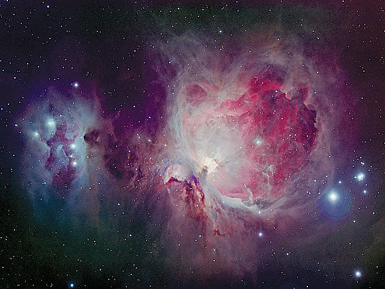
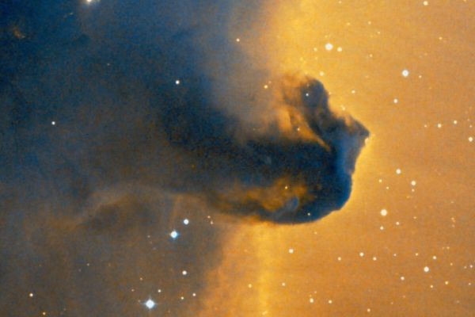

Латинское название: Orion
В греческой мифологии Орион был сыном Посейдона и стал знаменитым охотником. Он похвалялся тем, что нет животного, которого он не мог бы победить, за что Гера наслала на него Скорпиона. Орион очистил от диких зверей остров Хиос и стал просить у царя этого острова руки его дочери Меропы, но тот отказал ему. Орион попытался похитить Меропу, и царь решил ему отомстить: напоив допьяна, он ослепил Ориона. Гелиос возвратил Ориону зрение, но от укуса посланного Герой Скорпиона Орион все же погиб. Зевс поместил его на небе таким образом, что он может всегда уйти от своего преследователя, и действительно, эти два созвездия одновременно на небе не видны.
Ориона сопровождают две собаки — Большой Пес и Малый Пес.
Наверное, самая известная эмиссионная туманность - по-крайней мере, среди астрономов! - одна из ключевых фигур Облака Ориона. Туманность расположена в районе "Меча Ориона", около звезды η, и различима невооруженным глазом: по-крайней мере, можно легко заметить некую туманность, размытость расположенных здесь звезд. Туманность также обозначается M 42.
Знаменитая по фотографиям туманность. Темные облака пыли на фоне светящегося межзвездного газа действительно напоминает конскую голову. Хотя, скорее, морского конька или шахматную фигуру...
